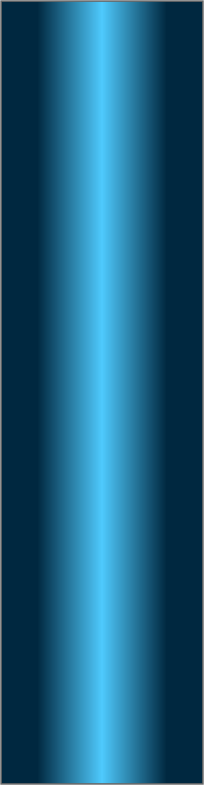
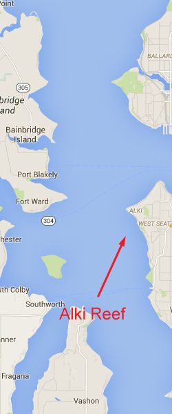
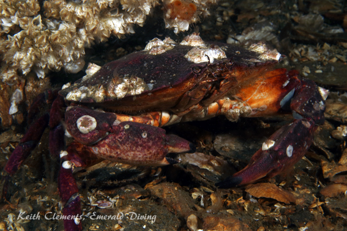

Alki Reef
Topography: Grouping of large boulder piles up to 20' feet tall and 100' established in the 1980s as part of the artificial reef effort to bolster rockfish populations.
Puget Sound marine life rating: 3
Puget Sound structure rating: 3
Diving depth: 70-90 feet
Highlight: Columns of beautiful giant plumose anemones line the top of the boulder piles. Greenling, rockfish, and small sculpins flock to this reef. Nice invertebrate life representation.
Skill level: Novice
GPS coordinates:
Access by boat: This site is about 1.4 miles south and just east of Alki Point. Sometimes there is a dive site marker buoy at this site, but as of July 2016 there is not. The GPS coordinates are taken while at anchor at the northern end of the reef. If the marker buoy is not present, I find the site by circling the GPS coordinates listed and watching my depth sounder. The surrounding substrate is very flat. I know I have found a section of the reef when I see the depth abruptly jump 10-20 feet and drop off again. I position myself upwind of the structure, drop anchor, and drift back into the reef to set anchor.
Shore access: None. The dive site is located several hundred yards offshore and not a practical shore dive.
Dive profile: The marker buoy or a properly positioned anchor makes for an easy decent as the anchor line leads directly to the reef. I often see the glow of bright white and orange plumose anemones attached to many of the boulders from 30 feet above the reef as I descend the anchor line. I check the anchor to make certain it has good holding power and is easily recoverable as soon as I reach bottom.
Multiple large rock piles make up this site. Each pile is about 15 to 20 feet high and up to 100 feet in diameter. The rock piles are situated close to one another. Some piles run together while others are not connected, but are visible (assuming visibility is reasonable) from one another. It is easy to get disoriented hopping from rock pile to rock pile and not know how to get back to the anchor line. Although paying close attention to my compass helps, I always make certain I carry my finger spool and signal marker buoy in case I need to perform a free ascent from the top of one of the rock piles.
My preferred gas mix: EAN40
Current observations: Wind driven current is my primary concern at the very exposed site. The affect of a wind driven current is limited to the top of the water column but needs to be accounted for before performing a free ascent. Tidal driven current is not a significant factor in this area during mild to moderate exchanges. I have only noted mild current at this site even when diving off-slack.
Boat Launch:
Don Armini boat ramp (West Seattle). Approximately 5 miles from the dive site.
Facilities: None
Hazards:
Offshore location: There is no nearby shore to swim to in an emergency.
Exposure: Wind and foul weather from any direction may result in rapidly deteriorating surface conditions.
Free ascent: A free ascent from 45 to 60 feet is necessary if the anchor line is not acquired at the end of the dive.
Boat traffic: Light to moderate traffic passes over this site, especially during summer months.
Fishing boats: This is a popular reef to jig for bottom fish. Salmon fishermen often troll through this general area. As is true anywhere people fish, discarded fishing line can present a lethal snagging hazard.
Marine life: This site is not overwhelming but does offer nice representation of central Puget Sound marine life. Most noticeable are the giant orange and white plumose anemones that dominate the top sections of the reef. It is almost magical to descend and watch the anemones appear on the reef through the emerald green waters on sunny days with good visibility,
This site is a great sanctuary for copper, brown, and quillback rockfish, small lingcod, perch, and small sculpins. I spend time searching the sand flats around the reef for interesting invertebrates such as pink, san diego, and giant nudibranchs, orange seapens, sunflower stars, and sand rose anemones. Lingcod, cabazon, and rock sole often take position on the flats surrounding the reef.
Some beautiful tune worms also inhabit this reef, including the parasol and twin-eyed tube worms.
Puget Sound marine life rating: 3
Puget Sound structure rating: 3
Diving depth: 70-90 feet
Highlight: Columns of beautiful giant plumose anemones line the top of the boulder piles. Greenling, rockfish, and small sculpins flock to this reef. Nice invertebrate life representation.
Skill level: Novice
GPS coordinates:
Access by boat: This site is about 1.4 miles south and just east of Alki Point. Sometimes there is a dive site marker buoy at this site, but as of July 2016 there is not. The GPS coordinates are taken while at anchor at the northern end of the reef. If the marker buoy is not present, I find the site by circling the GPS coordinates listed and watching my depth sounder. The surrounding substrate is very flat. I know I have found a section of the reef when I see the depth abruptly jump 10-20 feet and drop off again. I position myself upwind of the structure, drop anchor, and drift back into the reef to set anchor.
Shore access: None. The dive site is located several hundred yards offshore and not a practical shore dive.
Dive profile: The marker buoy or a properly positioned anchor makes for an easy decent as the anchor line leads directly to the reef. I often see the glow of bright white and orange plumose anemones attached to many of the boulders from 30 feet above the reef as I descend the anchor line. I check the anchor to make certain it has good holding power and is easily recoverable as soon as I reach bottom.
Multiple large rock piles make up this site. Each pile is about 15 to 20 feet high and up to 100 feet in diameter. The rock piles are situated close to one another. Some piles run together while others are not connected, but are visible (assuming visibility is reasonable) from one another. It is easy to get disoriented hopping from rock pile to rock pile and not know how to get back to the anchor line. Although paying close attention to my compass helps, I always make certain I carry my finger spool and signal marker buoy in case I need to perform a free ascent from the top of one of the rock piles.
My preferred gas mix: EAN40
Current observations: Wind driven current is my primary concern at the very exposed site. The affect of a wind driven current is limited to the top of the water column but needs to be accounted for before performing a free ascent. Tidal driven current is not a significant factor in this area during mild to moderate exchanges. I have only noted mild current at this site even when diving off-slack.
Boat Launch:
Don Armini boat ramp (West Seattle). Approximately 5 miles from the dive site.
Facilities: None
Hazards:
Offshore location: There is no nearby shore to swim to in an emergency.
Exposure: Wind and foul weather from any direction may result in rapidly deteriorating surface conditions.
Free ascent: A free ascent from 45 to 60 feet is necessary if the anchor line is not acquired at the end of the dive.
Boat traffic: Light to moderate traffic passes over this site, especially during summer months.
Fishing boats: This is a popular reef to jig for bottom fish. Salmon fishermen often troll through this general area. As is true anywhere people fish, discarded fishing line can present a lethal snagging hazard.
Marine life: This site is not overwhelming but does offer nice representation of central Puget Sound marine life. Most noticeable are the giant orange and white plumose anemones that dominate the top sections of the reef. It is almost magical to descend and watch the anemones appear on the reef through the emerald green waters on sunny days with good visibility,
This site is a great sanctuary for copper, brown, and quillback rockfish, small lingcod, perch, and small sculpins. I spend time searching the sand flats around the reef for interesting invertebrates such as pink, san diego, and giant nudibranchs, orange seapens, sunflower stars, and sand rose anemones. Lingcod, cabazon, and rock sole often take position on the flats surrounding the reef.
Some beautiful tune worms also inhabit this reef, including the parasol and twin-eyed tube worms.




Quillback Rockfish
Orange Seapen
San Diego Dorid
Widehand Hermit
Red Rock Crab
Underwater imagery from this site

Brown Rockfish